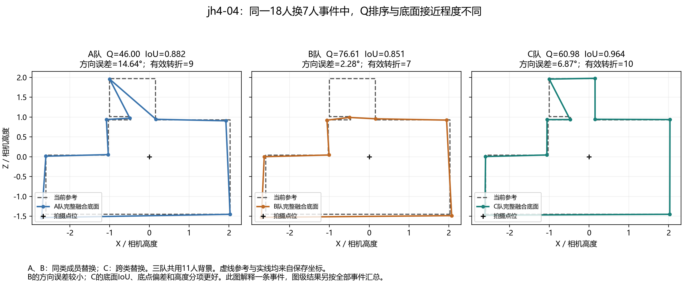

18人换7人：实际标注与共识
Manual · DSTRUCT K3 当前楼外标签 · v2.1 已保存事件。包含 7 张图级反例及一张正向对照，每张展示原登记顺序的第一条事件；单条事件不能替代整张图的平均。
固定背景 D 为11人；X、Y 是同一源类各7人，Z 是目标类的7人。A=D+X，B=D+Y，C=D+Z；切换图片、团队和人员，勾选成员查看其原答。
人工查看：jh4-04 首登记事件
请在原图上判断对应位置是否是真实、应保留的结构；这些入口不要求判断总体统计结论。跨队关联根据共同 D 成员的原答 ID 和点对建立，而非根据节点编号。
中心和原答各自保留上下点对，不连接成墙；候选编号只在当前团队内有效，不据编号认定不同团队的候选是同一结构。勾选支持者原答点对可同时查看原始点位，再切换人员查看完整环。
同一批团队的反例诊断
18人换7人的33图中，负 Q 幅度差为简单2/23、中等4/5、困难1/5；7张中5张的差距小于1分。1分只是描述尺度，不是显著性门槛，也不表示跨类必然降质。
保持286个ABC成员不变，用楼外 RFUSE_GEOM 标签描述：K2下所有同类 X/Y 块的构成都相同；K3下238次改变构成，但正例和反例均出现，不能仅凭重新贴标签解释反例。这些团队仍属 v2.1 原范围，不代表新增空间后重新选队验证。

差距小，还要看团队分数处于什么水平
以下是同一条件下三队共同可评分 ABC 中去重的团队，不把简单难度直接当作分数高或变化小的原因。同类／跨类为图内平均绝对 Q 变化，不表示升质方向。
| 图片与线索 | 可评分团队 | Q 均值与范围 | 同类／跨类幅度 |
|---|---|---|---|
| 简单 Z6-10：高分集中 | 24 | 98.38；96.07–99.17 | 0.97／0.89 |
| 简单 uNb-82：均值较高 | 48 | 96.35；92.55–97.89 | 1.68／1.26 |
| 中等 X7-19：分数接近但不高 | 24 | 72.14；70.72–74.82 | 1.24／0.95 |
| 中等 S9-05：同类换人也有较大变化 | 24 | 89.37；83.22–94.76 | 4.53／3.86 |
| 简单正例 S9-04：团队质量跨度大 | 21 | 75.47；57.83–98.72 | 0.49／35.29 |
高分集中可以提供一种解释线索；X7-19 则需要继续检查是否有共同偏差，不能仅凭低波动判断所有团队标得好。33图的团队平均Q与跨类幅度的图级 Spearman 相关为 −0.809，是受有界分数量尺与本次选队影响的描述性关联，不能推断因果。查看反例与分数分布说明 · 查看逐图数据
图线使用保存坐标与环序，页面不重算对应、投票、连接或评分。参考与团队 Q 采用该团队绑定的 v2.1 保存值；原图和个人作答复用 v2 展示资料，不把旧个人分数当作新版成绩。节点支持数不绑定图上点号。